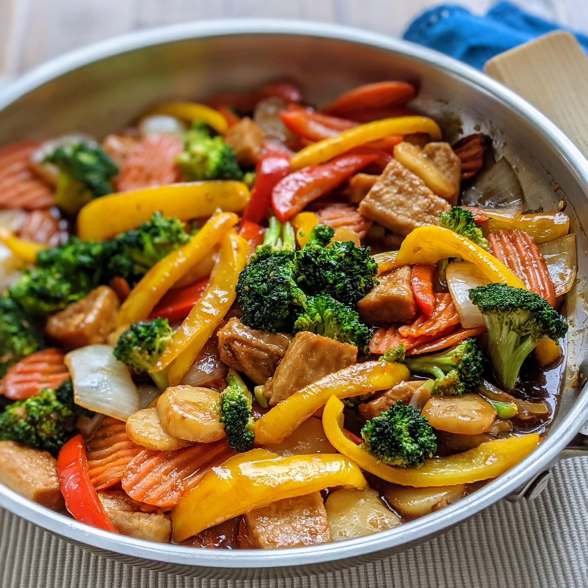

Chicken Stir Fry

A quick and easy dish to prepare, this chicken stir-fry is packed with veggies.
Try adding bean sprouts, bamboo shoots, snap peas, or any of your favorite vegetables. Serve it with white or brown rice, or noodles.
Ingredients:
- 2 cups white rice
- 4 cups water
- ⅔ cup soy sauce
- ¼ cup brown sugar
- 1 tablespoon cornstarch
- 1 tablespoon minced fresh ginger
- 1 tablespoon minced garlic
- ¼ teaspoon red pepper flakes
- 3 skinless, boneless chicken breast halves, thinly sliced
- 1 tablespoon sesame oil
- 1 green bell pepper, cut into matchsticks
- 1 (8 ounce) can sliced water chestnuts, drained
- 1 head broccoli, broken into florets
- 1 cup sliced carrots
- 1 onion, cut into large chunks
- 1 tablespoon sesame oil
Steps:
- Bring rice and water to a boil in a saucepan over high heat.
Reduce heat to medium-low, cover, and simmer until rice is tender, and liquid has been absorbed, 20 to 25 minutes.
- Combine soy sauce, brown sugar, and corn starch in a small bowl; stir until smooth.
Mix ginger, garlic, and red pepper into sauce; coat chicken with marinade and refrigerate for at least 15 minutes.
- Heat 1 tablespoon sesame oil in a large skillet over medium-high heat.
Cook and stir bell pepper, water chestnuts, broccoli, carrots, and onion until just tender, about 5 minutes. Remove vegetables from skillet and keep warm.
- Remove chicken from marinade, reserving liquid. Heat 1 tablespoon sesame oil in skillet over medium-high heat.
Cook and stir chicken until slightly pink on the inside, about 2 minutes per side; return vegetables and reserved marinade to skillet.
Bring to a boil; cook and stir until chicken is no longer pink in the middle and vegetables are tender, 5 to 7 minutes. Serve over rice.